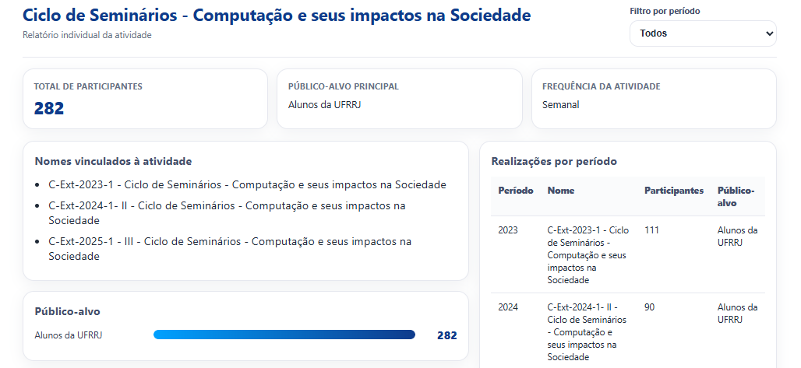
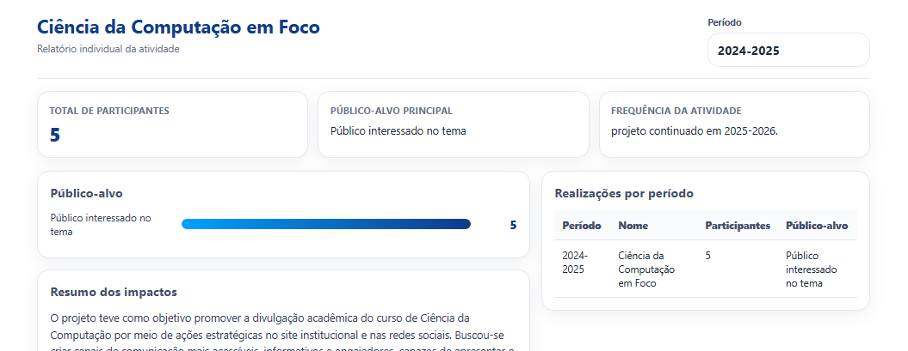
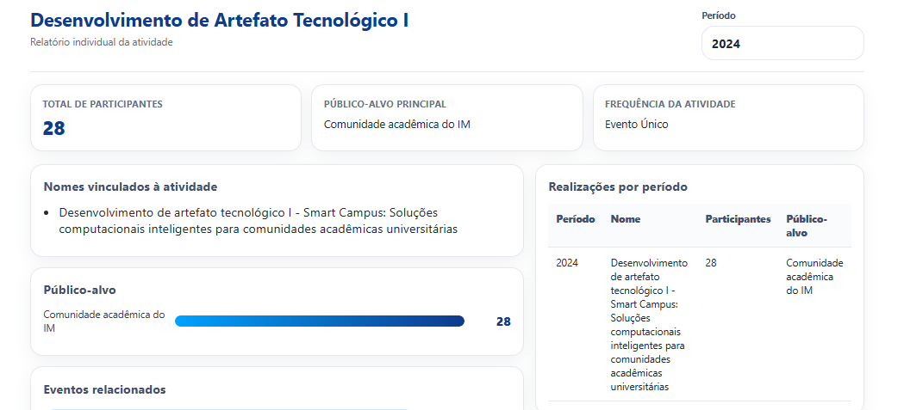
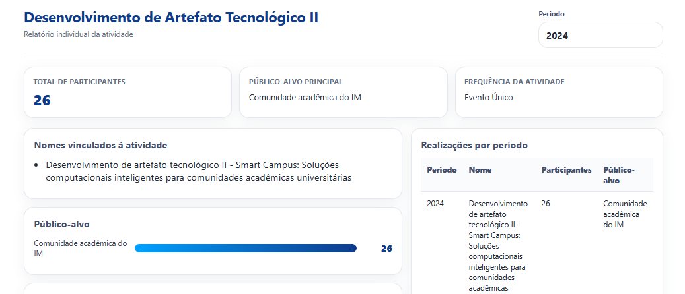
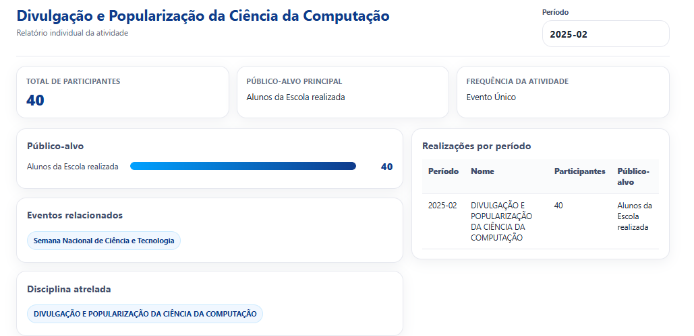
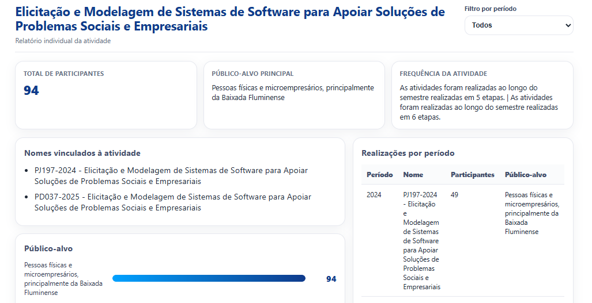
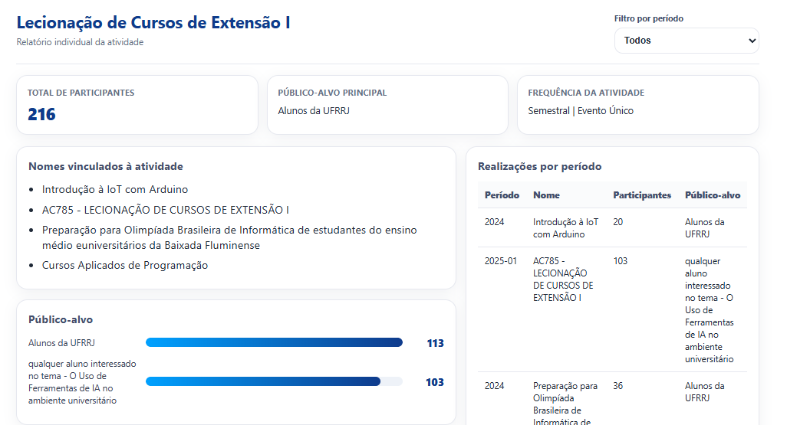
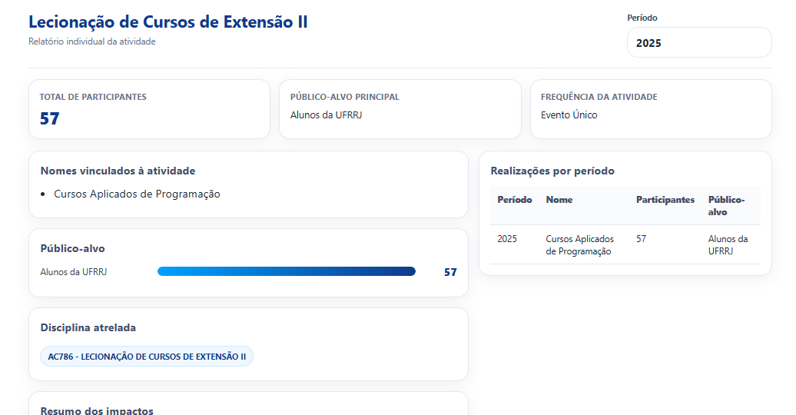
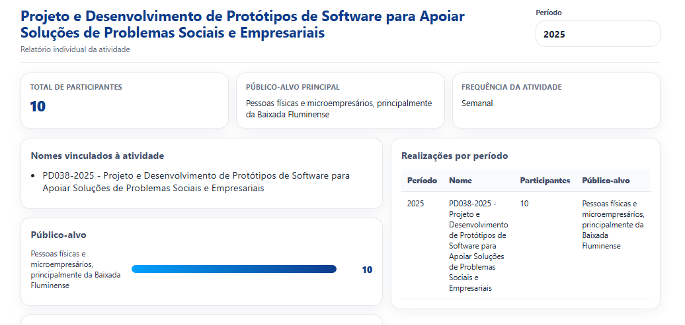

Ciclo de Seminários - Computação e seus impactos na Sociedade
282 participantes • 2023, 2024, 2025
SAIBA MAIS →O curso de Ciência da Computação é uma das graduações mais dinâmicas e fundamentais da era digital. Ao contrário do que muitos pensam, não se trata apenas de "consertar computadores" ou "fazer sites", mas sim do estudo sistemático da computação, dos algoritmos e da resolução de problemas complexos através da tecnologia.
O currículo é projetado para oferecer uma base sólida tanto em teoria quanto em aplicação prática. O curso geralmente se divide em três grandes pilares:
É projeto acadêmico de extensão no nosso curso de Ciência da Computação onde fizemos uma pesquisa sobre as atividades extensionistas ofertadas através dos dados fornecidos pela universidade e formulários respondidos por docentes e escolas.
O propósito da nossa atividade gira em torno de três eixos principais:

282 participantes • 2023, 2024, 2025
SAIBA MAIS →






